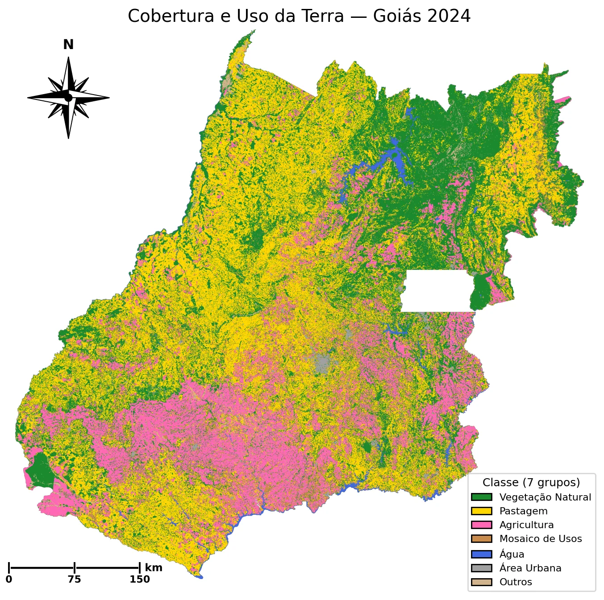

Qualificação de mestrado · Goiás · 1985–2024
Dinâmica de uso e cobertura da terra em Goiás (1985–2024) e seus fatores socioeconômicos
A hipótese de partida
No Sul, a lavoura toma o lugar do pasto.
O pasto deslocado sobe para o Norte, levando o boi junto.
E lá, abre o Cerrado que ainda resta.
Foi daqui que o trabalho partiu. As duas pontas aparecem nos dados; o elo entre elas, o empurrão, não apareceu nos testes.
O problema
O deslocamento indireto de uso da terra (iLUC), dentro do estado.
A conversão tem origem localizável: uma política regional pode alcançá-la.
Atuando ao longo do gradiente Sul–Norte, medido pela aptidão.
Se as duas regiões respondem ao mesmo incentivo, não há origem a conter.
O próprio encolhimento do Cerrado ainda exposto à conversão.
O ritmo passa a depender do estoque, e não só do mercado.
Pergunta de pesquisa
Como e por que o uso da terra mudou em Goiás entre 1985 e 2024?
Em sua forma mais precisaO que coordena a reorganização espacial da produção agropecuária no estado?
Justificativa e objetivos
A expansão acontece sobre área já aberta.
A expansão avança sobre vegetação natural.
6,56 Mha de savana e campo expostos à conversão; 44% no Norte.
Mesmo classificador, malha e fonte nas duas regiões. O deslocamento de vizinho para vizinho dentro de um estado não aparece nas fontes consultadas: aqui ele é testado.
Objetivo geral: caracterizar e explicar a reorganização espacial do uso e cobertura da terra em Goiás entre 1985 e 2024, em sua relação com fatores socioeconômicos.
Existência, ritmo e robustez do deslocamento para o norte.
Os mecanismos locais: intensificação e pasto→lavoura no Sul; extensificação no Norte.
Testar o deslocamento intraestadual e o papel dos drivers, com destaque para o câmbio.
A desaceleração recente e o teto de oferta de terra no Sul.
Dados e método
MapBiomas Coleção 10.1, a 30 m: todos os pixels de Goiás, nos 40 anos, na grade original do produto.
Os 246 municípios de hoje viram 166 Áreas Mínimas Comparáveis (Ehrl, 2017), unidades cujo contorno não muda com as emancipações do período.
Cada medida do satélite tem uma contraparte que não passa por ele: soja plantada e rebanho do IBGE, crédito rural, câmbio e preços. Nos gráficos, a medida de campo leva a etiqueta IBGE.
Periodização
O ato mais destrutivo em volume: a pastagem avança 3,71 Mha e a vegetação natural cede 4,10 Mha.
A lavoura cresce (1,17 → 3,00 Mha), mas sem mudar de endereço.
A lavoura mantém o ritmo; quem inverte o sinal é a pastagem (+0,248 → −0,076 Mha/ano).
Muda a fonte da terra: a lavoura passa a crescer sobre o pasto.
O pasto recua quase 4× mais rápido. A lavoura nova passa a ser rotulada “Mosaico”.
As fronteiras não foram escolhidas: saem de testes de quebra estrutural aplicados às séries de uso da terra. A de 2020 aparece também na soja plantada do IBGE, que não passa pelo satélite.
Periodização · o balanço
MapBiomas Coleção 10.1 · área de cada classe em Goiás, ano a ano
Ato III · antes das quatro perguntas
Sul de Goiás · ritmo anual no Ato III, comparado ao do Ato II
No fim da série, parte da lavoura nova sobre pasto passa a ser rotulada “Mosaico de Usos”. Somadas as duas classes, a conversão no Sul não para: acelera.
Pergunta 1 de 4 · O padrão existe? o método
Um halter com pesos diferentes. Apoiado no meio, ele tomba para o lado mais pesado.
Ele só para onde os puxões dos dois lados se anulam: na média das posições, ponderada pelo peso.
Em Goiás, cada AMC vira um peso: os hectares de pasto, pendurados no centroide dela. Os pesos são 166.
Visto de lado, com o norte à direita, o estado vira uma régua. As AMC se empilham por faixa de 10 km, e o apoio vai para o equilíbrio de 1985.
De 1985 a 2024, com o apoio parado onde estava, a régua tomba para o norte. O contorno é o pasto de 1985.
O novo ponto de equilíbrio fica 77,6 km ao norte. É esse o número do próximo slide.
E se o resultado dependesse de poucas AMC? Cada sorteio monta um Goiás alternativo com as 166 AMC tiradas com reposição: umas entram duas vezes, outras ficam de fora. São 2.000 sorteios. Sorteando blocos de AMC vizinhas, a faixa alarga e o veredito não muda.
Na vegetação natural, o apoio quase não sai do lugar, e a faixa de 95% dos sorteios inclui o zero. Não dá para dizer que o centro dela se moveu: é o que se chama de ancorado.
m = massa (peso) · y = posição
(3·20 + 1·100) ÷ (3 + 1) = 40 cm
166 termos · mi = hectares de pasto da AMC
yi = posição norte–sul do centroide
Pesos e centroides das 166 AMC · MapBiomas 10.1 · o halter é ilustrativo
Pergunta 1 de 4 · O padrão existe?
Quanto o centro andou para o norte · 1985 → 2024
A lavoura fica sempre 123–135 km ao sul do pasto e do boi: as camadas sobem juntas, sem trocar de ordem.
Onde está cada camada · Sul Centro Norte
Lavoura
Pastagem
Rebanho IBGE
O centro sobe quando o Norte ganha peso na soma. O pasto sai do Sul e entra no Norte; o rebanho fica parado no Sul e mais que dobra no Norte. A lavoura cresce nas três regiões, e mais no Sul em hectares, mas o Centro e o Norte, que quase não tinham lavoura, passam a ter mais de um quarto dela.
Centro de massa ponderado pela área de cada camada nas 166 AMC · intervalo de 95% por 2.000 sorteios · MapBiomas 10.1 e IBGE
Pergunta 1 de 4 · O padrão existe?
Quanto o centro de cada medida andou para o norte entre 2019 e 2024
Medidas que não passam pelo rótulo “Agricultura”
Lavoura vista pelo satélite
É a janela em que a lavoura nova passa a ser rotulada Mosaico. O centro da “Agricultura” para justamente quando o rótulo muda, enquanto a soja do IBGE segue subindo.
Pergunta 2 de 4 · Qual é o mecanismo?
A transição que manda é pasto → lavoura: terra que troca de função.
A transição que manda é vegetação → pasto: terra nova sendo aberta.
Vegetação natural → pasto · ritmo anual no Ato III, comparado ao do Ato II
No Sul, a abertura de vegetação natural cai pela metade; no Norte, quase não muda.
Isso responde onde. Para saber como, é preciso outra medida: a idade do pasto no momento em que vira lavoura.
Pergunta 2 de 4 · Qual é o mecanismo?
Cada barra é a parte do pasto convertido que tinha aquela idade. Há um pico nos primeiros anos e uma cauda longa.
Se todo esse pasto fosse de um tipo só, as idades seguiriam a curva tracejada. Ela não alcança o pico.
Pasto jovem · cerca de 4 anos, 33% das conversões. Nos de até 3 anos, 45% já tinham sido lavoura antes: é rotação.
Pasto velho · cerca de 16 anos, 67%. Nos de 30 anos ou mais, só 1% já tinha sido lavoura: é pasto antigo que só agora virou lavoura.
Os dois tipos convivem em toda parte, nas 5 mesorregiões e dentro das 166 AMC. A região explica só 0,5% da variação da idade.
MapBiomas 10.1 · 16,0 milhões de conversões de pasto em lavoura com idade conhecida · idade = anos seguidos como pasto
Pergunta 3 de 4 · O Sul empurrou o Norte? o método
O que esperaríamos?
O que apareceu no espaço?
O que apareceu no tempo?
Se a lavoura do Sul empurrasse o pasto para o Norte, estas duas marcas teriam de aparecer.
Cada ponto é uma AMC num ano. A inclinação esperada é positiva; a observada é negativa (θ = −0,157).
Somar o passado da lavoura do Sul praticamente não melhora a previsão do pasto do Norte (p = 0,97).
MapBiomas 10.1 · painel das 166 AMC, 1985–2024, com efeitos fixos de AMC e de ano
Pergunta 3 de 4 · O Sul empurrou o Norte?
Os dois testes do slide anterior, repetidos com três medidas de lavoura e em duas janelas: até 2019 e até 2024.
No espaço · 12 inclinações
0 de 12 na zona do empurrão
Com 4 ou 12 vizinhos em vez de 8, algumas inclinações do rebanho passam para o lado positivo, mas nenhuma se distingue de zero.
No tempo · 24 testes
0 de 24 na zona do empurrão
O teste no tempo detecta um empurrão forte em ~93% das vezes; um moderado, em ~48%.
MapBiomas 10.1 e IBGE · painel das 166 AMC · o ponto marcado é o exemplo do slide anterior
Pergunta 3 de 4 · O Sul empurrou o Norte?
1O choque é comum
Com o real desvalorizado, a soja e a carne exportadas rendem mais reais, no estado inteiro ao mesmo tempo.
2A exposição é diferente
A aptidão agrícola da terra (Embrapa) é maior no Sul e menor no Norte.
3A resposta prevista
Sul, terra mais aptaa terra vai para a lavoura, e o rebanho cresce menos
Norte, terra menos aptao rebanho cresce mais
Nos dados, a direção é a prevista, mas o p fica entre 0,07 e 0,13.
Câmbio real efetivo (Ipeadata) · aptidão agrícola (Embrapa) · rebanho (IBGE) · p de permutação do choque
Pergunta 4 de 4 · Por que desacelerou?
Média do Ato III comparada à do Ato II
Demanda · Goiás
Conversão · Sul
O Sul não parou de querer terra: passou a tirar bem menos da vegetação natural (−49%) e mais do pasto já aberto. No estado, a abertura de vegetação quase não mudou (0,071 → 0,072 Mha por ano): mudou de endereço.
Ipeadata (câmbio real e cotação internacional da soja; a linha da soja já contém o câmbio) · MapBiomas 10.1 (conversões)
Pergunta 4 de 4 · Por que desacelerou?
Savana e campo nativo ainda expostos à conversão
% do que cada região tinha em 1985
Quanto menos resta, mais devagar se converte: a relação é negativa nas 16 combinações testadas, e significante em 11.
Não é a proteção integral: 94–97% do que resta está fora dela, e ela quase não cresceu desde 1985 (+0,12 Mha, contra 4,11 Mha suprimidos). Reserva Legal e APP ficam em aberto.
O limite: só 17% da freada do Sul é, pela conta, restar menos vegetação. Os outros 83% não têm causa isolada; o argumento se apoia em descartar as alternativas e na queda da taxa.
MapBiomas 10.1 · savana e campo nativo, incluídas Reserva Legal e APP: por isso é um teto
Pergunta 4 de 4 · Por que desacelerou?
Carbono · 973 Mt CO₂e de estoque removido da vegetação natural
Estoque removido, em Mt CO₂e por ano (média do ato)
Três quartos saíram no Ato I. Depois, a fronteira passou a consumir quase só savana, menos densa em carbono que a floresta.
Desenvolvimento municipal · IFDM médio por região (0 a 1)
O Norte quase dobrou a área cultivada entre 2013 e 2021 (+93%, contra +14% no Sul), e o vão para o Sul quase não mudou. Dentro de cada município, dobrar a área vale 0,008 ponto de IFDM, diante dos cerca de 0,15 que o índice subiu na década (associação, não causa).
Densidades de carbono do Quarto Inventário Nacional · IFDM (FIRJAN) · MapBiomas 10.1
Veredito
O empurrão local não apareceu. A intensificação no Sul e a fronteira no Norte são compatíveis com estímulos econômicos comuns ao longo do gradiente Sul→Norte e com o encolhimento da vegetação ainda exposta.
| Pergunta | Resposta | O placar dos testes |
|---|---|---|
| 1 · O padrão existe? | Sim: pasto, rebanho e lavoura estão mais ao norte. | +78 · +67 · +65 kma vegetação, sem deslocamento detectável |
| 2 · Qual é o mecanismo? | Pasto→lavoura no Sul, vegetação→pasto no Norte; dois tipos de pasto em todo lugar. | 166 de 166 AMCcom os dois tipos de pasto |
| 3 · O Sul empurrou o Norte? | O empurrão não apareceu; a lavoura toma o pasto ali mesmo. | 0 de 36 · 5 de 6com o empurrão · com a substituição local |
| 4 · Por que desacelerou? | Não faltou comprador: compatível com atrito de oferta. | 16 de 16 · 11 de 16a taxa cai onde resta menos · com p < 0,05 |
Discussão
| Arcabouço | O que Goiás mostra | Até onde vai |
|---|---|---|
| Renda da terraAngelsen (2007) | A ordem dos usos se mantém: a lavoura fica 123–135 km ao sul do pasto nos 40 anos. | Não separa qualidade, acesso ou preço da terra. |
| Transição florestalAngelsen (2007); Rudel et al. (2005) | O Sul estabiliza sem regenerar: terceiro estágio de Angelsen, sem transição pela definição de Rudel. | Cinco anos, e o Cerrado savânico limita a analogia. |
| Deslocamento indiretoArima et al. (2011) | O canal entre vizinhos não aparece em 36 especificações; a substituição local aparece. | Nada aqui refuta o iLUC de longo alcance. |
| CâmbioRichards (2012) | Um gradiente compatível com estímulo comum; Richards mede o efeito do câmbio em outra escala. | p = 0,07–0,13: indício, sem identificar o câmbio. |
Alcance e limites
O intervalo da vegetação inclui zero. E um centro de massa é o equilíbrio da distribuição: ele sobe com o ganho do Norte e com a perda do Sul, sem que nenhum hectare se mova.
A região explica 0,5% da idade, e o sistema produtivo não decide. A resposta está abaixo da escala municipal, no imóvel rural.
Só o canal intraestadual, local e contemporâneo foi testado. E câmbio, crédito e preço andam juntos: o desenho não separa qual deles, nem se o eixo é aptidão ou latitude.
“Exposta” e “protegida” são tetos, e não o cadastro lote a lote. E o Ato III tem cinco anos: sinal inicial, não regime consolidado.
Próximos passos
| Atividade | Set | Out | Nov | Dez | Jan |
|---|---|---|---|---|---|
| Revisão de literatura | |||||
| Arestas empíricas residuais | |||||
| Reescrita do referencial | |||||
| Repositório e visualização | |||||
| Redação final | |||||
| Depósito | |||||
| Defesa |
Frentes abertas
Literatura: quem já testou deslocamento em escala subnacional (Arima et al., 2011, é o precedente conhecido).
Separar aptidão de latitude: procurar uma medida de exposição econômica que não cresça junto com a latitude. Se não houver uma, isso fica declarado como limite do trabalho.

2024
Para a arguição
Letra ou clique abre a página aqui dentro · Esc volta · + − ajustam o tamanho
Para a arguição
O pasto do Norte tem tendência que uma diferença não remove: é I(2). Regredir uma série estacionária sobre outra que não é fabrica precedência espúria.
O Granger simples acende no sentido inverso, Norte→Sul (p = 0,0007), e acende igual em placebos sem mecanismo, como o pasto do Norte “prevendo” o pasto do Sul.
O Toda–Yamamoto ajusta o modelo em nível com defasagens extras (dmax = 2) e continua válido nesse caso. Ele não acende em nenhum sentido.
Poder do Granger nesta série (T = 38): ~93% para um empurrão forte, ~48% para um moderado. Um empurrão moderado não fica descartado só por este teste.
Testes ADF e KPSS em nível, na primeira e na segunda diferença
Para a arguição
A pergunta deixa de ser “AMC com mais lavoura têm menos pasto?” e passa a ser “quando a lavoura de uma AMC subiu, o pasto dela recuou?”.
Sobre a diferença, o efeito fixo de AMC tira o ritmo próprio de cada uma. O coeficiente mede o desvio em relação ao que a tendência local e o ano já previam.
Em nível, área e produção correlacionam ~0,9 só porque as duas cresceram; na variação within, a mesma dupla fica perto de zero. Três exceções declaradas: Toda–Yamamoto, o teto de oferta e a correlação estadual descritiva.
AMC de Rio Verde · lavoura (MapBiomas 10.1)